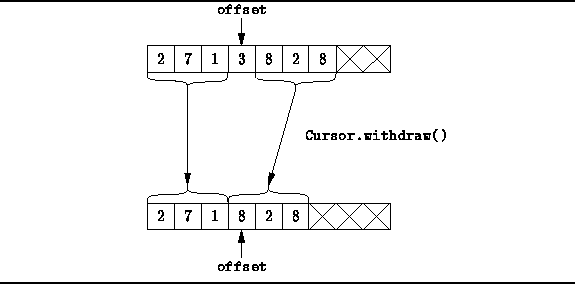
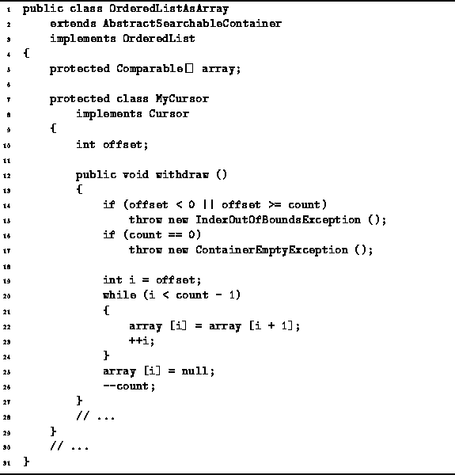

Data Structures and Algorithms
with Object-Oriented Design Patterns in Java
Data Structures and Algorithms
with Object-Oriented Design Patterns in JavaThe final method of the OrderedListAsArray.MyCursor class that we will consider is the withdraw method. The desired effect of this method is to remove from the ordered list the item at the position specified by the cursor.
Figure  shows the way in which to delete
an item from an ordered list which implemented with an array.
All of the items remaining in the list to the right of the deleted item
need to be shifted to the left in the array by one position.
shows the way in which to delete
an item from an ordered list which implemented with an array.
All of the items remaining in the list to the right of the deleted item
need to be shifted to the left in the array by one position.

Figure: Withdrawing an item from an ordered list implemented as an array.
Program gives the implementation
of the withdraw method.
After checking the validity of the position,
all of the items following the item to be withdraw are moved
one position to the left in the array.

Program: OrderedListAsArray.MyCursor class withdraw method.
The running time of the withdraw method
depends on the position in the array of the item being deleted
and on the number of items in the ordered lists.
In the worst case, the item to be deleted is in the first position.
In this case, the work required to move the remaining items left is O(n),
where  .
.
 Copyright © 1998 by Bruno R. Preiss, P.Eng. All rights reserved.
Copyright © 1998 by Bruno R. Preiss, P.Eng. All rights reserved.